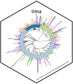

3 Performing Taxonomically Informed Metabolite Annotation
Adriano Rutz
2024-08-02
Source:vignettes/articles/III-processing.Rmd
III-processing.RmdThis vignette describes how Taxonomically Informed Metabolite Annotation is performed. If you followed all previous steps successfully, this should be a piece of cake, you deserve it!
targets::tar_make(names = matches("ann_pre$"), script = system.file("pipelines/_targets.R", package = "tima"))
#> ✔ skipped target yaml_paths
#> ✔ skipped target paths
#> ✔ skipped target paths_data_source_libraries_spectra_is_lotus_neg
#> ✔ skipped target paths_urls_examples_spectral_lib_neg
#> ✔ skipped target par_pre_par
#> ✔ skipped target par_def_pre_fea_com
#> ✔ skipped target par_def_pre_lib_spe
#> ✔ skipped target paths_data_source_libraries_sop_lotus
#> ✔ skipped target paths_data_source_libraries_sop_ecmdb
#> ✔ skipped target paths_urls_ecmdb_metabolites
#> ✔ skipped target paths_test_mode
#> ✔ skipped target par_def_cre_edg_spe
#> ✔ skipped target par_def_pre_lib_sop_mer
#> ✔ skipped target par_def_pre_lib_sop_lot
#> ✔ skipped target par_pre_par2
#> ✔ skipped target par_def_pre_lib_sop_ecm
#> ✔ skipped target par_def_pre_ann_spe
#> ✔ skipped target par_def_ann_mas
#> ✔ skipped target paths_urls_examples_spectra_mini
#> ✔ skipped target paths_urls_massbank_file
#> ✔ skipped target paths_urls_lotus_doi
#> ✔ skipped target par_def_ann_spe
#> ✔ skipped target par_def_fil_ann
#> ✔ skipped target par_def_cre_com
#> ✔ skipped target par_def_pre_lib_rt
#> ✔ skipped target par_def_pre_ann_sir
#> ✔ skipped target paths_data_source_libraries_sop_hmdb
#> ✔ skipped target paths_urls_hmdb_structures
#> ✔ skipped target paths_urls_massbank_url
#> ✔ skipped target par_def_pre_fea_edg
#> ✔ skipped target par_def_pre_lib_sop_clo
#> ✔ skipped target paths_data_source_spectra
#> ✔ skipped target paths_urls_massbank_version
#> ✔ skipped target par_def_pre_fea_tab
#> ✔ skipped target par_def_pre_ann_gnp
#> ✔ skipped target paths_data_source_libraries_spectra_is_lotus_pos
#> ✔ skipped target paths_urls_examples_spectral_lib_pos
#> ✔ skipped target par_def_pre_lib_sop_hmd
#> ✔ skipped target par_def_pre_tax
#> ✔ skipped target paths_urls_lotus_pattern
#> ▶ dispatched target par_def_wei_ann
#> ● completed target par_def_wei_ann [0 seconds]
#> ▶ dispatched target lib_spe_is_lot_neg
#> File already exists. Skipping.
#> ● completed target lib_spe_is_lot_neg [0.01 seconds]
#> ✔ skipped target par_fin_par
#> ✔ skipped target lib_sop_ecm
#> ✔ skipped target par_fin_par2
#> ✔ skipped target lib_sop_hmd
#> ✔ skipped target lib_spe_exp_mb_raw
#> ▶ dispatched target lib_spe_is_lot_pos
#> File already exists. Skipping.
#> ● completed target lib_spe_is_lot_pos [0 seconds]
#> ▶ dispatched target lib_sop_lot
#> A file with the same size is already present. Skipping
#> ● completed target lib_sop_lot [1.46 seconds]
#> ✔ skipped target lib_spe_is_lot_pre_neg
#> ✔ skipped target par_usr_pre_ann_sir
#> ✔ skipped target par_usr_pre_fea_com
#> ✔ skipped target par_usr_pre_lib_sop_ecm
#> ✔ skipped target par_usr_ann_mas
#> ✔ skipped target par_usr_pre_lib_spe
#> ✔ skipped target par_usr_fil_ann
#> ✔ skipped target par_usr_pre_lib_sop_lot
#> ✔ skipped target par_usr_pre_ann_spe
#> ✔ skipped target par_usr_cre_edg_spe
#> ✔ skipped target par_usr_ann_spe
#> ✔ skipped target par_usr_pre_fea_edg
#> ✔ skipped target par_usr_pre_lib_sop_mer
#> ✔ skipped target par_usr_cre_com
#> ✔ skipped target par_usr_pre_lib_rt
#> ✔ skipped target par_usr_pre_ann_gnp
#> ✔ skipped target par_usr_pre_lib_sop_clo
#> ✔ skipped target par_usr_pre_tax
#> ✔ skipped target par_usr_pre_fea_tab
#> ✔ skipped target par_usr_pre_lib_sop_hmd
#> ▶ dispatched target par_usr_wei_ann
#> 2024-08-02 07:36:47.677785 Loading default params
#> 2024-08-02 07:36:47.691267 All params
#> 2024-08-02 07:36:47.691561 Small params
#> 2024-08-02 07:36:47.691701 Changing params
#> 2024-08-02 07:36:47.691925 Changing filenames
#> 2024-08-02 07:36:48.324493 Exporting params ...
#> ● completed target par_usr_wei_ann [1.477 seconds]
#> ✔ skipped target lib_spe_exp_mb_pre
#> ✔ skipped target lib_spe_is_lot_pre_pos
#> ✔ skipped target par_pre_ann_sir
#> ✔ skipped target par_pre_fea_com
#> ✔ skipped target par_pre_lib_sop_ecm
#> ✔ skipped target par_ann_mas
#> ✔ skipped target par_pre_lib_spe
#> ✔ skipped target par_fil_ann
#> ✔ skipped target par_pre_lib_sop_lot
#> ✔ skipped target par_pre_ann_spe
#> ✔ skipped target par_cre_edg_spe
#> ✔ skipped target par_ann_spe
#> ✔ skipped target par_pre_fea_edg
#> ✔ skipped target par_pre_lib_sop_mer
#> ✔ skipped target par_cre_com
#> ✔ skipped target par_pre_lib_rt
#> ✔ skipped target par_pre_ann_gnp
#> ✔ skipped target par_pre_lib_sop_clo
#> ✔ skipped target par_pre_tax
#> ✔ skipped target par_pre_fea_tab
#> ✔ skipped target par_pre_lib_sop_hmd
#> ▶ dispatched target par_wei_ann
#> ● completed target par_wei_ann [0.001 seconds]
#> ✔ skipped target lib_spe_exp_mb_pre_sop
#> ✔ skipped target lib_spe_exp_mb_pre_pos
#> ✔ skipped target lib_spe_exp_mb_pre_neg
#> ✔ skipped target lib_sop_ecm_pre
#> ✔ skipped target lib_spe_exp_int_pre
#> ✔ skipped target lib_sop_lot_pre
#> ✔ skipped target input_spectra
#> ✔ skipped target lib_sop_clo_pre
#> ✔ skipped target input_features
#> ✔ skipped target input_metadata
#> ✔ skipped target lib_sop_hmd_pre
#> ✔ skipped target lib_spe_exp_int_pre_sop
#> ✔ skipped target lib_spe_exp_int_pre_pos
#> ✔ skipped target lib_spe_exp_int_pre_neg
#> ✔ skipped target fea_edg_spe
#> ✔ skipped target fea_pre
#> ✔ skipped target ann_spe_pos
#> ✔ skipped target lib_rt
#> ✔ skipped target ann_spe_neg
#> ✔ skipped target edg_spe
#> ✔ skipped target lib_rt_sop
#> ✔ skipped target lib_rt_rts
#> ✔ skipped target lib_sop_mer
#> ✔ skipped target lib_mer_str_met
#> ✔ skipped target lib_mer_str_nam
#> ✔ skipped target lib_mer_str_stereo
#> ✔ skipped target lib_mer_str_tax_cla
#> ✔ skipped target lib_mer_str_tax_npc
#> ✔ skipped target lib_mer_org_tax_ott
#> ✔ skipped target lib_mer_key
#> ✔ skipped target ann_sir_pre
#> ✔ skipped target ann_spe_exp_gnp_pre
#> ✔ skipped target ann_spe_pre
#> ✔ skipped target tax_pre
#> ✔ skipped target ann_ms1_pre
#> ✔ skipped target ann_sir_pre_for
#> ✔ skipped target ann_sir_pre_can
#> ✔ skipped target ann_sir_pre_str
#> ✔ skipped target ann_ms1_pre_edg
#> ✔ skipped target ann_ms1_pre_ann
#> ✔ skipped target fea_edg_pre
#> ✔ skipped target ann_fil
#> ✔ skipped target fea_com
#> ✔ skipped target int_com
#> ✔ skipped target fea_com_pre
#> ▶ dispatched target ann_pre
#> 2024-08-02 07:36:49.209634 Loading files ...
#> 2024-08-02 07:36:49.20979 ... components
#> 2024-08-02 07:36:49.212159 ... edges
#> 2024-08-02 07:36:49.214341 ... structure-organism pairs
#> 2024-08-02 07:36:53.453672 ... canopus
#> 2024-08-02 07:36:53.480515 ... formula
#> 2024-08-02 07:36:53.506097 ... annotations
#> 2024-08-02 07:36:55.82126 Got c("ISDB", "TIMA MS1") initial annotations
#> 2024-08-02 07:36:55.82126 Got c(975, 284538) initial annotations
#> 2024-08-02 07:36:56.440729 Re-arranging annotations
#> 2024-08-02 07:36:58.085442 adding biological organism metadata
#> 2024-08-02 07:36:58.214434 performing taxonomically informed scoring
#> 2024-08-02 07:36:58.260209 filtering top 3 candidates and keeping only MS1 candidates with minimum
#> 0 biological score
#> OR 0 chemical score
#>
#> 2024-08-02 07:36:58.49159 adding "notClassified"
#>
#> 2024-08-02 07:36:59.6349 calculating biological score at all levels ...
#>
#> 2024-08-02 07:36:59.635093 ... domain
#>
#> 2024-08-02 07:36:59.644922 ... kingdom
#>
#> 2024-08-02 07:36:59.653921 ... phylum
#>
#> 2024-08-02 07:36:59.662848 ... class
#>
#> 2024-08-02 07:36:59.672487 ... order
#>
#> 2024-08-02 07:36:59.68646 ... family
#>
#> 2024-08-02 07:36:59.709609 ... tribe
#>
#> 2024-08-02 07:36:59.724504 ... genus
#>
#> 2024-08-02 07:36:59.798838 ... species
#>
#> 2024-08-02 07:37:00.061313 ... varietas
#>
#> 2024-08-02 07:37:00.071858 ... keeping best biological score
#>
#> 2024-08-02 07:37:01.437375 ... calculating weighted biological score
#>
#> 2024-08-02 07:37:02.218622 taxonomically informed scoring led to
#> 44593 annotations reranked at the kingdom level,
#> 44186 annotations reranked at the phylum level,
#> 36399 annotations reranked at the class level,
#> 10791 annotations reranked at the order level,
#> 8887 annotations reranked at the family level,
#> 1489 annotations reranked at the tribe level,
#> 1197 annotations reranked at the genus level,
#> 455 annotations reranked at the species level,
#> and 0 annotations reranked at the variety level.
#> WITHOUT TAKING CONSISTENCY SCORE INTO ACCOUNT! (for later predictions)
#> 2024-08-02 07:37:02.378241 calculating chemical consistency
#> features with at least 2 neighbors ...
#>
#> 2024-08-02 07:37:02.449772 ... among all edges ...
#>
#> 2024-08-02 07:37:02.449932 ... at the (classyfire) kingdom level
#>
#> 2024-08-02 07:37:02.508829 ... at the (NPC) pathway level
#>
#> 2024-08-02 07:37:02.635421 ... at the (classyfire) superclass level
#>
#> 2024-08-02 07:37:02.756634 ... at the (NPC) superclass level
#>
#> 2024-08-02 07:37:03.035211 ... at the (classyfire) class level
#>
#> 2024-08-02 07:37:03.295463 ... at the (NPC) class level
#>
#> 2024-08-02 07:37:04.238069 ... at the (classyfire) parent level
#>
#> 2024-08-02 07:37:04.772708 splitting already computed predictions
#>
#> 2024-08-02 07:37:05.421789 joining all except -1 together
#>
#> 2024-08-02 07:37:07.081004 adding dummy consistency for features
#> with less than 2 neighbors
#>
#> 2024-08-02 07:37:07.125338 adding already computed predictions back
#>
#> 2024-08-02 07:37:09.02181 calculating chemical score at all levels ...
#>
#> 2024-08-02 07:37:09.021992 ... (classyfire) kingdom
#>
#> 2024-08-02 07:37:09.027557 ... (NPC) pathway
#>
#> 2024-08-02 07:37:09.036388 ... (classyfire) superclass
#>
#> 2024-08-02 07:37:09.044915 ... (NPC) superclass
#>
#> 2024-08-02 07:37:09.064914 ... (classyfire) class
#>
#> 2024-08-02 07:37:09.089621 ... (NPC) class
#>
#> 2024-08-02 07:37:09.149954 ... (classyfire) parent
#>
#> 2024-08-02 07:37:09.214903 ... keeping best chemical score
#>
#> 2024-08-02 07:37:09.623714 ... calculating weighted chemical score
#>
#> 2024-08-02 07:37:09.759454 chemically informed scoring led to
#> 27139 annotations reranked at the (classyfire) kingdom level,
#> 17893 annotations reranked at the (NPC) pathway level,
#> 14211 annotations reranked at the (classyfire) superclass level,
#> 8471 annotations reranked at the (NPC) superclass level,
#> 14150 annotations reranked at the (classyfire) class level,
#> 8314 annotations reranked at the (NPC) class level, and
#> 8139 annotations reranked at the (classyfire) parent level.
#> WITHOUT TAKING CONSISTENCY SCORE INTO ACCOUNT!
#> 2024-08-02 07:37:09.959833 Keeping high confidence candidates only...
#> 2024-08-02 07:37:09.965371 Removed 284379 low confidence candidates out of the 286415 total ones.
#> 2024-08-02 07:37:09.965744 2036 high confidence candidates remaining.
#> 2024-08-02 07:37:11.029271 adding initial metadata (RT, etc.) and simplifying columns
#>
#> 2024-08-02 07:37:11.059825 adding references
#>
#> 2024-08-02 07:37:12.530461 selecting columns to export
#>
#> 2024-08-02 07:37:12.605926 adding consensus again to droped candidates
#>
#> 2024-08-02 07:37:14.696748 Exporting ...
#> 2024-08-02 07:37:14.702384 Directory data/processed/240802_073714_example created.
#> 2024-08-02 07:37:14.702503 ... path to used parameters is data/processed/240802_073714_example
#> 2024-08-02 07:37:18.581637 ... path to used parameters is data/processed/240802_073714_example
#> 2024-08-02 07:37:19.036637 ... path to export is data/processed/240802_073714_example/example_results.tsv
#> ● completed target ann_pre [29.873 seconds]
#> ▶ ended pipeline [36.669 seconds]
#> The final exported file is formatted in order to be easily imported in Cytoscape to further explore your data!
We hope you enjoyed using TIMA and are pleased to hear from you!
For any remark or suggestion, please fill an issue or feel free to contact us directly.